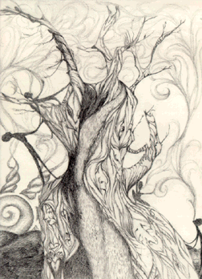

Student Project
Megan

Trees
When I'm in trees, I look into the bark and see figures flowing along the surface. I could sit for hours staring at it and picking out pictures, faces, words, and designs, unless of course, it's an aspen. Just the smell of the trees lends itself to the overall solitude and peace that I feel. I don't like being with others when I'm taking a walk through the forest. It's like tossing boulders into a perfectly still swimming pool. Trees can actually invade your soul and change your mood. It depends upon the individual, but nature has a tendency to smooth over the frayed edges of a personality. It can calm nerves and relax the body. Being in trees is like praying to God without words, and when no one is looking it is easy to find things to do to keep yourself occupied..
-Megan
c. Megan
ALbert Lowry High School
Winnemucca, Nevada USA
Pencil on Paper 9 "X12"
Bristlecone Pine
Latin Name: Pinus Aristata
Age: 4,600 years
Circumference: TBA
Location: Great Basin National Park
Ely, Nevada
 Return to Main Page
Return to Main Page
June Julian jj68@nyu.edu